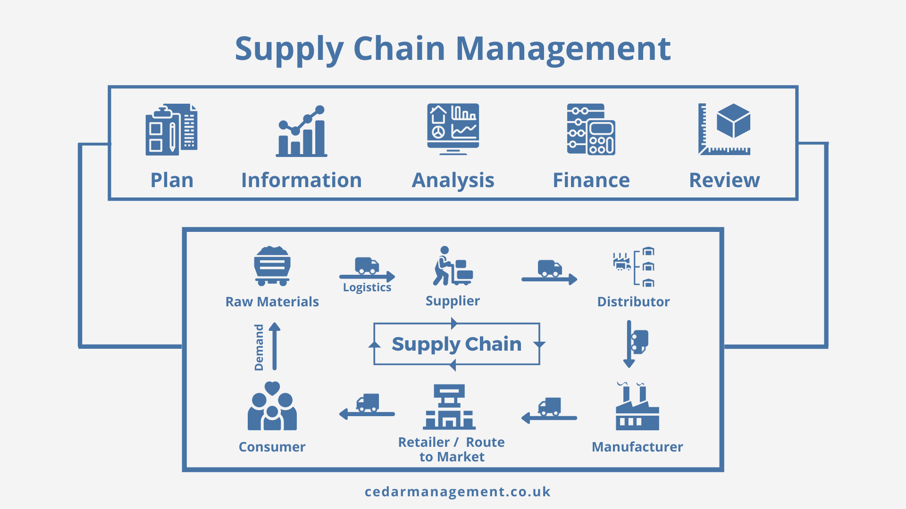
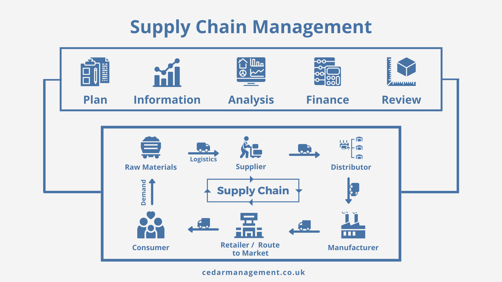

Перспективы SCM
Перспективы:
На протяжении многих лет покупаиель появлялся в цепи поставок только на финальном этапе. Никто не задумывался, откуда продукт взялся, из чего он изготовлен и каким образом попал в магазин. Сейчас все больше покупателей волнует прозрачность и устойчивость цепи поставок. Покупатели получили возможность выбирать, как и где покупать и какие возможности им необходимы во время покупки. Чтобы компания развивалась и оставалась конкурентоспособной на рынке, современные решения SCM должны собирать и интерпретировать все данные, сгенерированные на протяжении цепи поставок. Максимально эффективно использовать эти данные позволяют современные аналитические инструменты, обрабатывающие информацию в
реальном времени. Извлеченные сведения используются для гибкой, интеллектуальной автоматизации процессов SCM.
Looks like CSS3 supports multiple background images; you specify